Gebrüder Klasing
Dachreinigung, Fassadenreinigung & Steinreinigung Bamberg
Gebrüder Klasing ist Ihr regionaler Ansprechpartner für professionelle Dachreinigung, Fassadenreinigung, Pflasterreinigung und Terrassenreinigung in Bamberg und Umgebung. Wir reinigen Dächer, Fassaden, Natursteine und Pflasterflächen gründlich, schonend und nachhaltig – inklusive Langzeitschutz gegen Moos, Algen und Verschmutzungen.
Wir sind unter anderem in Bamberg, Bayreuth, Forchheim, Hirschaid, Schweinfurt, Würzburg, Coburg und vielen weiteren Städten in Franken für Sie im Einsatz.
Kostenlose Beratung sichern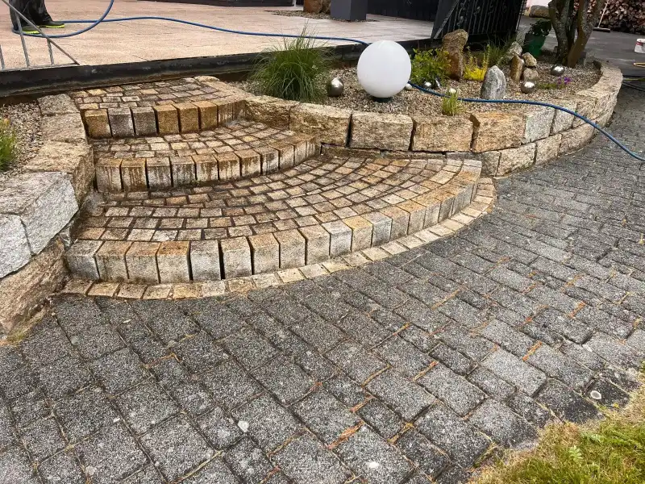
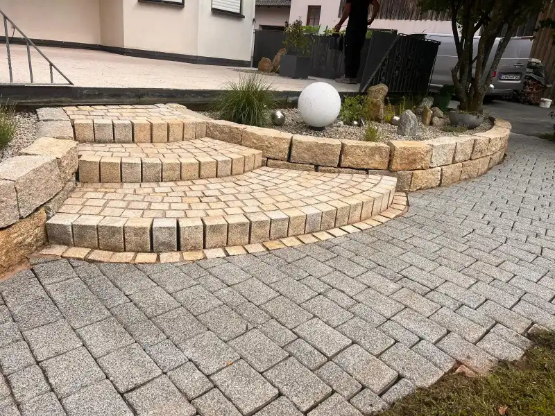
Wer sind wir?
Ihre Experten für Dachreinigung, Fassadenreinigung und Steinreinigung in Bamberg & Umgebung
Mit langjähriger Erfahrung und moderner Reinigungstechnik sorgen wir für saubere und gepflegte Außenflächen rund um Ihr Zuhause oder Ihre Gewerbeimmobilie. Ob Dachreinigung, Fassadenreinigung, Pflasterreinigung oder Terrassenreinigung – wir arbeiten effizient, materialschonend und mit umweltfreundlichen Reinigungsmitteln.
Unser Ziel ist nicht nur eine optische Aufwertung Ihrer Immobilie, sondern auch der langfristige Schutz Ihrer Oberflächen vor Algen, Moos, Schmutz und Witterungseinflüssen.
Mehr über uns erfahren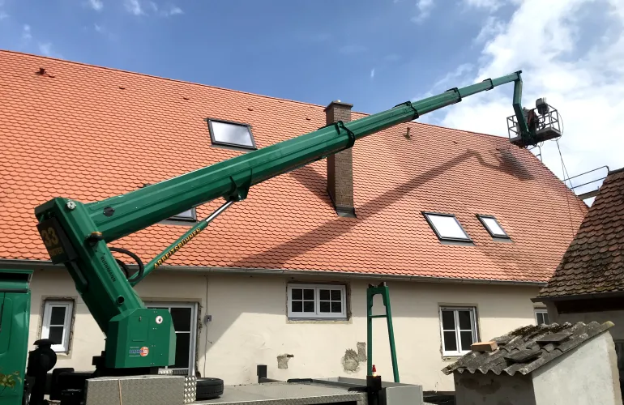
Mit Klick wird das Video von Vimeo geladen.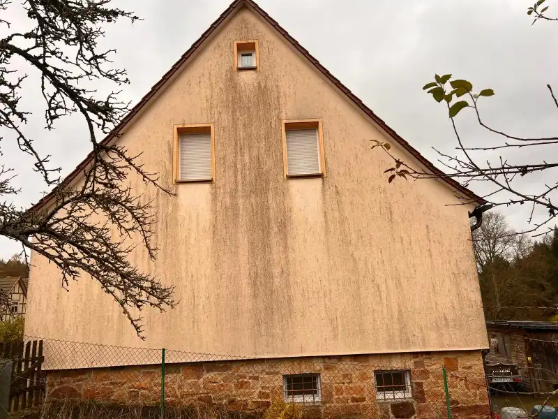
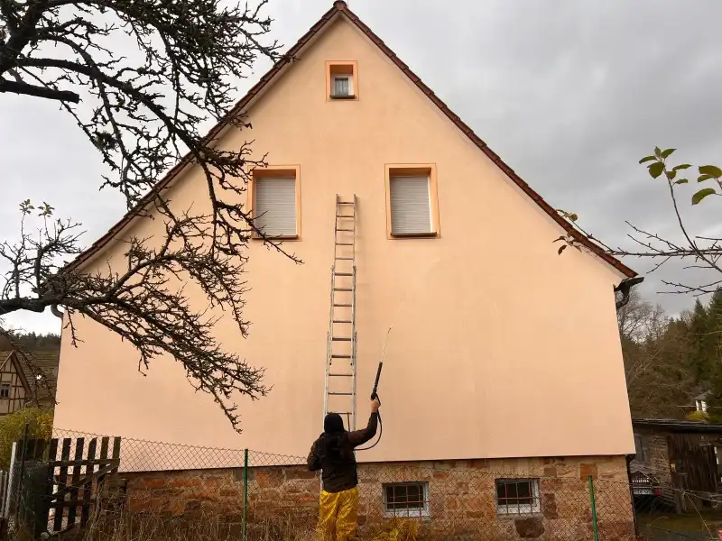
Was wir anbieten
Unsere Reinigungsleistungen in Bamberg
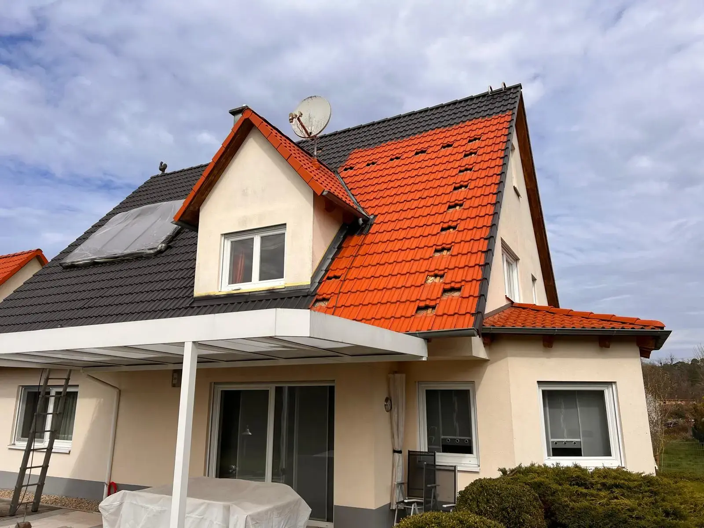
Professionelle Dachreinigung & Dachbeschichtung Bamberg
Moos, Algen und Schmutz setzen sich mit der Zeit auf nahezu jedem Dach fest. Mit unserer professionellen Dachreinigung in Bamberg entfernen wir hartnäckige Verschmutzungen gründlich und schonend. Auf Wunsch schützen wir Ihr Dach zusätzlich mit einer langlebigen Dachbeschichtung für ein gepflegtes Erscheinungsbild und längere Haltbarkeit.
Mehr erfahren ➜Gründliche Fassadenreinigung & Mauerreinigung Bamberg
Verschmutzte Fassaden wirken ungepflegt und können langfristig Schäden verursachen. Unsere Fassadenreinigung in Bamberg entfernt Algen, Grünbelag, Schmutz und Umweltrückstände schonend und effektiv – für eine saubere und gepflegte Hausfassade.
Mehr erfahren ➜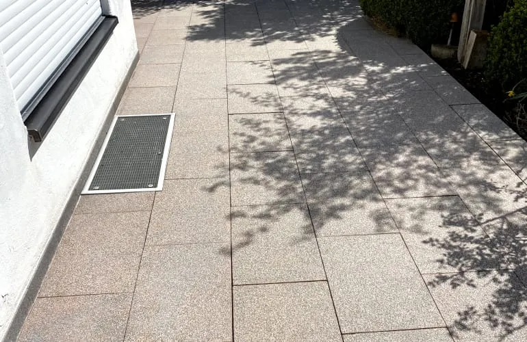
Natursteinreinigung & Pflasterreinigung Bamberg
Wir reinigen Pflastersteine, Einfahrten, Gehwege, Natursteine und Außenflächen professionell und gründlich. Durch unsere Steinreinigung in Bamberg wirken Ihre Flächen wieder deutlich gepflegter und sicherer. Optional bieten wir eine Kunstharzverfugung an, um Unkrautbildung langfristig zu reduzieren.
Mehr erfahren ➜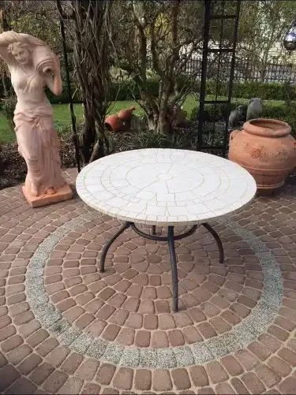
Terrassenreinigung Bamberg
Nach Herbst und Winter sammeln sich oft Moos, Algen und hartnäckige Verschmutzungen auf Terrassenflächen. Mit unserer professionellen Terrassenreinigung in Bamberg bringen wir Ihre Terrasse wieder in einen sauberen und gepflegten Zustand – perfekt für die Sommersaison.
Mehr erfahren ➜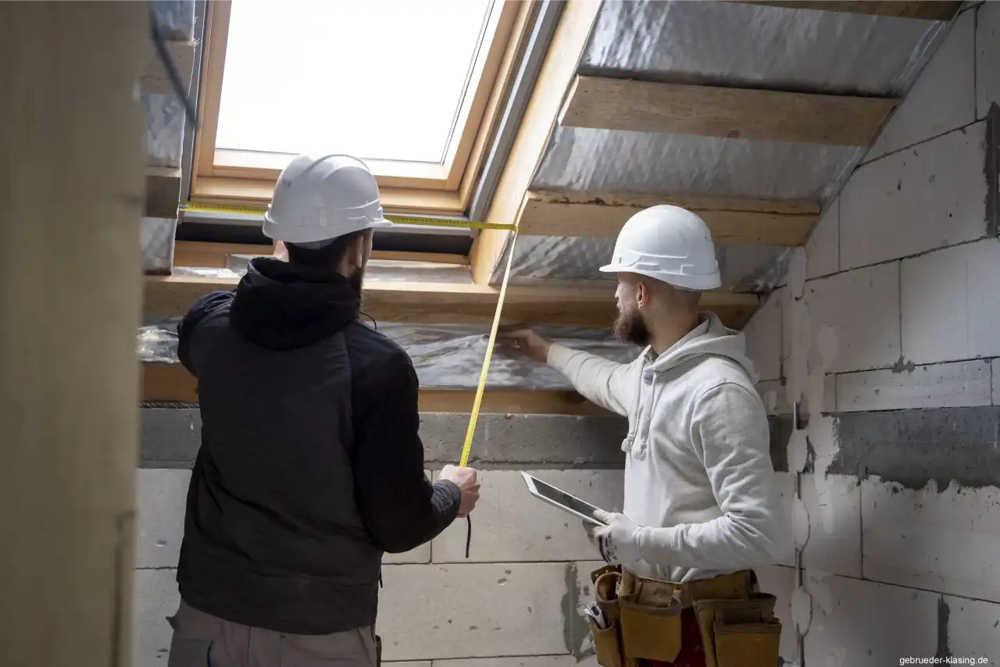
Innensanierung Bamberg
Komplettservice für Ihre Innenräume – von der Planung bis zur Umsetzung
Mehr erfahren ➜Bereit für den Winter
Jetzt ist die richtige Zeit für eine professionelle Dachreinigung im Herbst
Der Herbst ist der ideale Zeitpunkt, um das Dach noch einmal gründlich überprüfen und reinigen zu lassen. Nach den warmen Monaten haben sich häufig Moos, Algen, Grünbelag, Laub und Schmutz auf der Dachfläche angesammelt. Mit Beginn der kalten und feuchten Jahreszeit bleibt die Oberfläche zudem länger nass.
Eine professionelle Dachreinigung im Herbst entfernt hartnäckige Verschmutzungen und sorgt dafür, dass Ihr Dach sauber und gepflegt in den Winter startet. Gleichzeitig lassen sich auffällige Stellen an der Dachfläche frühzeitig erkennen.
Das sollten Sie über Dachreinigung im Herbst wissenGründliche Reinigung
Moos, Algen & Schmutz werden fachgerecht entfernt
Winterfest
Dach rechtzeitig auf die kalte Jahreszeit vorbereiten
Fachgerecht
Schonende Reinigung passend zur Dachfläche
Transparente Kosten
Individuelle Einschätzung & nachvollziehbares Angebot
Ihre Vorteile auf einen Blick
Warum Gebrüder Klasing
für Ihre Reinigung in Bamberg?
Fachgerechte Reinigung für nachhaltige Ergebnisse
Bei der Reinigung von Dächern, Steinflächen und Fassaden kommt es nicht nur auf das sichtbare Ergebnis an. Entscheidend sind auch die richtige Einschätzung des Untergrunds, die Auswahl eines geeigneten Reinigungsverfahrens und eine sorgfältige Durchführung.
Persönliche Beratung und transparente Kosten
Sie planen eine Dachreinigung oder Steinreinigung in Bamberg? Wir beraten Sie persönlich zu den erforderlichen Arbeiten und erstellen ein individuelles Angebot, das auf Ihre Immobilie und den tatsächlichen Reinigungsbedarf abgestimmt ist.
Individuelle Lösungen für Ihre Außenflächen
Ob einzelne Terrassenplatten, eine gepflasterte Einfahrt oder größere Außenflächen – wir unterstützen Sie dabei, die passende Reinigungslösung für Ihre Immobilie in Bamberg und Umgebung zu finden.
Kostenlose Erstberatung
Jetzt Reinigung in Bamberg
unverbindlich anfragen
Nutzen Sie unser Kontaktformular, um schnell und unkompliziert Ihre kostenlose Beratung für Dach-, Stein- und Fassadenreinigung zu erhalten.
Wir beantworten Ihre Fragen zeitnah und erstellen Ihnen ein individuelles Angebot – ganz ohne Verpflichtungen.
Wir arbeiten umweltfreundlich
Unsere Reinigung ist
umweltfreundlich und nachhaltig
Umweltbewusste Reinigungsmethoden
Unsere Reinigungsverfahren sind darauf ausgerichtet, Verschmutzungen effektiv zu entfernen und gleichzeitig die Umwelt möglichst wenig zu belasten.
Schonend für Oberflächen
Wir stimmen die Reinigung auf das jeweilige Material ab, um gründliche Ergebnisse zu erzielen und die Oberflächen bestmöglich zu schonen.
Nachhaltig handeln
Ein verantwortungsvoller Umgang mit Wasser und Reinigungsmitteln ist uns wichtig. So tragen wir dazu bei, Ihre Außenflächen zu pflegen und Umweltbelastungen möglichst gering zu halten.
Vorher & Nachher
Sichtbare Ergebnisse
unserer Reinigungsarbeiten
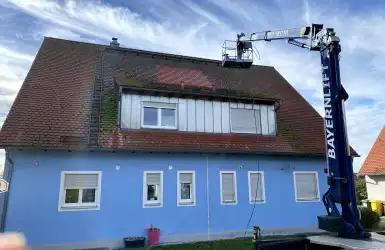
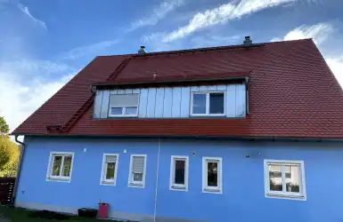
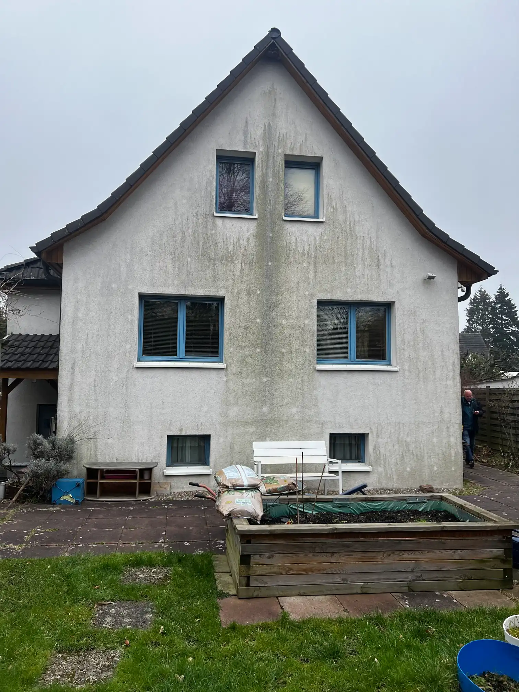
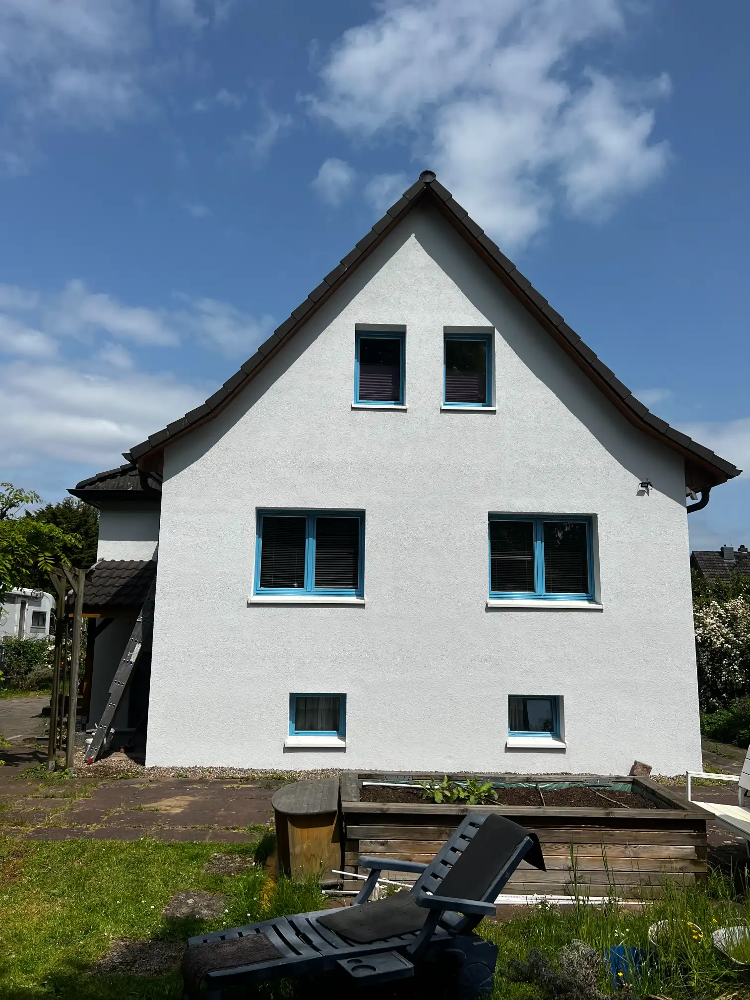
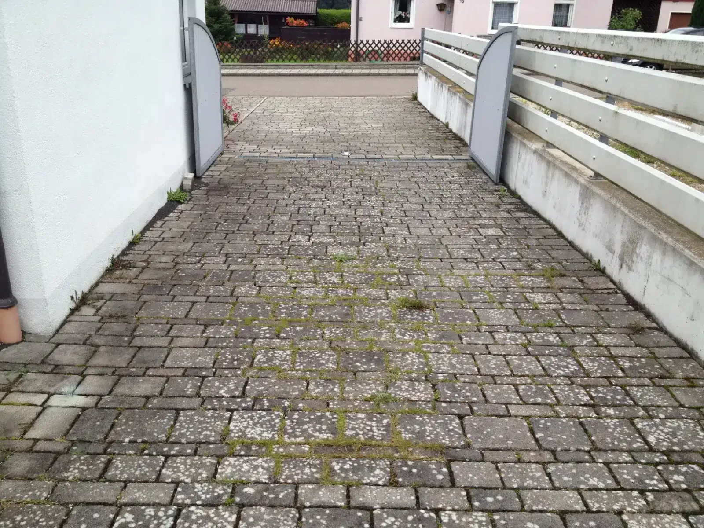
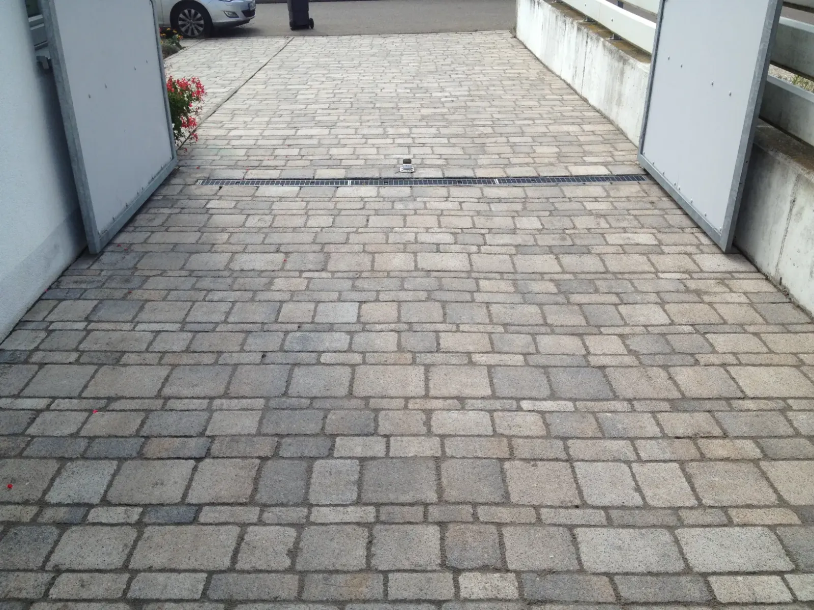
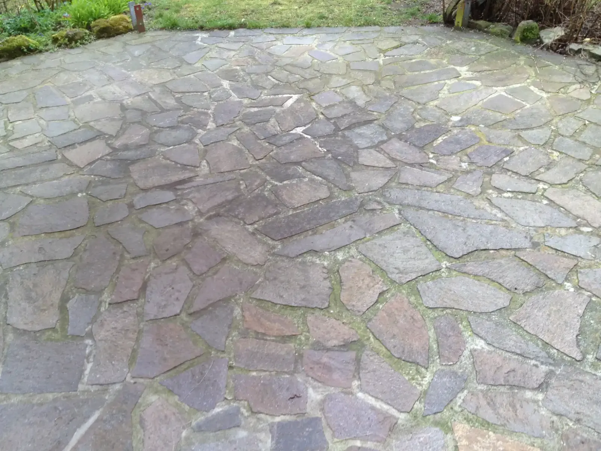
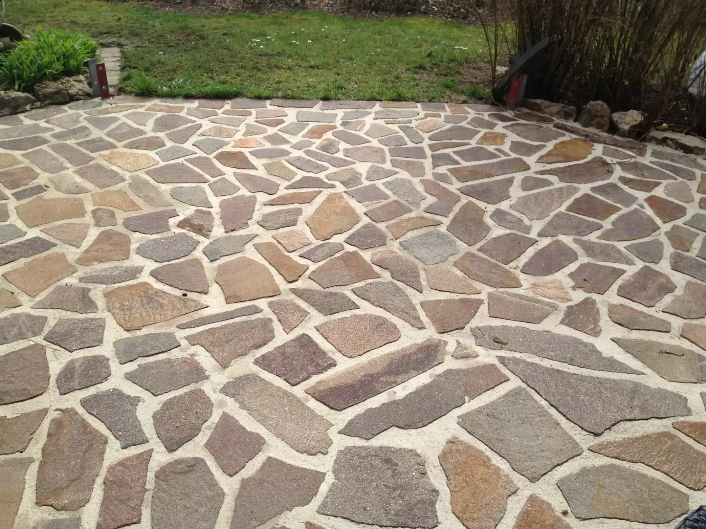
FAQ
Das könnte Sie interessieren, wenn Sie eine professionelle Außenreinigung planen
Ist mein Dach, meine Fassade oder meine Steine durch die Reinigung sicher?
Ja! Wir verwenden ausschließlich schonende Methoden, die Ihre Flächen schützen. So bleiben Dächer, Fassaden, Terrassen oder Pflaster unbeschädigt und langlebig.
Sehen Sie Beispiele unserer Arbeiten:
Wie schnell sehe ich Ergebnisse nach der Reinigung?
Die optischen Ergebnisse sind sofort sichtbar: Ihr Dach, Ihre Fassade oder Ihre Pflasterflächen strahlen sauber und gepflegt.
Für langfristige Sauberkeit nutzen wir Pflege- und Schutzmaßnahmen, die das Nachwachsen von Moos, Algen und Schmutz deutlich reduzieren.
Wie lange hält die Reinigung und Pflege meiner Flächen?
Die Dauer der Sauberkeit hängt von Art und Zustand der Flächen ab. Durch unsere professionellen Behandlungen bleibt Ihr Dach, Ihre Fassade oder Steinflächen monatelang sauber und geschützt.
Beispiele:
Muss ich selbst etwas vorbereiten oder entsorgen?
Nein, Sie müssen sich um nichts kümmern! Wir übernehmen alles von der Vorbereitung über die Reinigung bis zur fachgerechten Entsorgung.
Mehr Infos zu unseren Leistungen und Preisen finden Sie hier: Reinigungsservice Preise
Wie viel kostet die Reinigung?
Die Kosten hängen von Größe, Material und Verschmutzungsgrad ab. Wir erstellen Ihnen einen unverbindlichen Kostenvoranschlag, damit Sie genau wissen, welche Leistungen enthalten sind.
Haben Sie noch Fragen?
Unser Team steht Ihnen für eine unverbindliche Beratung zur Verfügung.
Kontaktieren Sie uns gerne über das Kontaktformular oder rufen Sie uns direkt an.
Kostenlose Beratung sichern 0 152 233 377 75